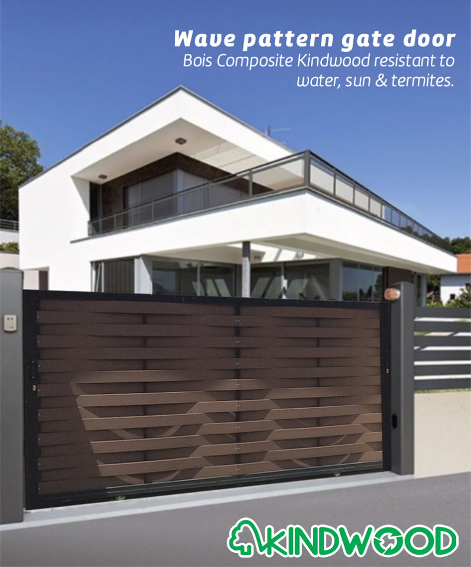

Bois Composite
ecologique
Le Bois Composite Kindwood est fait a partir de poussiere de bois et de granules de plastique. C'est un produit recycle et donc ecologique: embellisez votre environnement et préservez l'environnement en même temps.
pratique
Tout un eventail de modeles et de couleurs sont disponibles. Notre produit est decline en lames de longeur allant jusqu'a 5800 cm et largeur allant jusqu'a 30 cm.
Le Bois Composite Kindwood est resistant au soleil, a la pluie et aux termites et ne requiert guere d'entretien.
ideal
Les lames Kindwood avec un simple support en metal, sont le choix ideal pour vos portails, balustrades, barrages ou decking.
Nous serons heureux de vous recevoir dans nos deux showrooms sis a Beau Bassin et a La Tour Koenig.
